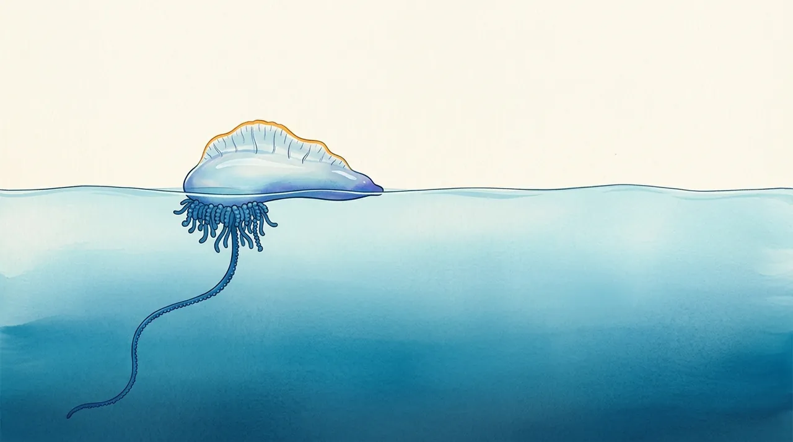

This band runs live in Swim Manly, a free forecast app used every morning by the regular swimmers of Cabbage Tree Bay. It is wind-only by design, and it reports relative risk, never a probability. Every claim below that comes from the published literature carries a citation. Wherever this model leans on that work, or departs from it, a two-column box says so. The skill figures were recomputed from scratch on 9 Oct 2026 from public data, and the script is in the repository, so anyone can reproduce them.
The model in one picture
Per hour t, from the forecast wind for Cabbage Tree Bay:
Blue steps carry the wind physics; orange steps carry abundance and display. Nothing in steps 7–8 changes a threshold: a day is rated by its worst 3 h window, so a single gust cannot spike it, but a sustained onshore push at any hour shows.
The sailor
A bluebottle is a passive surface sailor: a gas-filled float with a crest (the sail) above the water, and a fishing tentacle below that drags like a sea anchor. Its course is set by the wind on the sail balanced against the drag of the tentacle and the water it sits in.

FIG 2Side view, so the drift angle cannot be drawn: in plan, the animal sails off the wind, to one side or the other depending on its handedness. Painted illustration, not to scale.
The theory and the lab work are both from Schaeffer’s group. Treated as a sailboat in force balance, a bluebottle drifts at about 2.66% of the wind speed, 47° off the wind1. In a wind flume, 3D-printed replicas drifted at a mean 1.7% of the wind speed, at an angle that decays from about 40° towards downwind as the wind strengthens. Left- and right-handed forms split symmetrically in weak winds3. The same theory says the surface current cannot be neglected even in a 10 m/s wind, because the wind-driven drift (~0.27 m/s) is of the same order as the current1.
Those speeds give a useful scale for this model’s time window. In a 20 km/h onshore wind, a bluebottle moving at 1.7–2.7% covers about 1–1.6 km in 3 h, but 8–13 km in 24 h. So a 3 h window only sees the last approach across the bay mouth. A 24 h window spans the inner shelf the animals arrive from. The re-run below finds the longer window scores slightly better.
The physical premise: wind on the sail is the transport (Lee, Schaeffer & Groeskamp 2021; Bourg et al. 2024). This is why the model needs nothing but wind to work at all.
No drift angle, no handedness, no current, no Stokes drift. The model is empirical: it projects the wind on the shore normal as a bulk proxy for “wind is pushing floating things at this beach”, and lets the sightings calibrate the rest. A mechanistic Lagrangian version would be the natural next step.
The bay and its onshore window
Cabbage Tree Bay is a small, NE-opening bay between the south end of Manly Beach and Shelly headland. The model weights each hour’s wind by the cosine of its angle to the bay’s 82° shore normal. Wind from 82° counts in full, wind from N or S counts as zero, and any offshore wind is clamped to zero rather than allowed to subtract. An offshore wind does not take back the animals already inshore.

FIG 3North up. The orange lobe is the weighting max(0, cos(θ − 82°)) drawn in the direction the wind comes from: its length along any bearing is the share of that wind that counts. The dashed wedge is the 45–135° (NE–SE) sector where Hewitt et al. (2026) found beaching probability highest. Base painting from the app’s own ocean pages.
AUC of the 3 h onshore score when the projection direction is swept round the compass (re-run, ERA5). Against every day, the optimum is , essentially the shipped 82°. Against same-season days only, it swings north-east, to . That second design removes the seasonal wind climate, so it isolates the day-to-day signal. Both peaks sit inside the NE–SE sector of Hewitt et al. and match the NE and SE composites of Bourg et al.
Onshore (cross-shore) wind is the strongest driver of beachings: it is the dominant term in the Randwick GEE of Bourg et al. (2022). NE–SE winds of 45–135° raise beaching probability across 66 NSW beaches (Hewitt et al. 2026).
A continuous cosine on one site-specific normal, instead of 45° orientation classes (Hewitt) or wind-sector composites (Bourg). It is a single parameter, which suits a small bay with few records. A fetch-weighted alternative was tested in the original fit and lost to the plain cosine.
From onshore wind to a band
The thresholds sit near the quartiles of prior-3 h onshore wind on stranding-days in the original fit (25th/50th/75th ≈ 1.4 / 7.8 / 13.4 km/h). The first edge was later raised from 2 to 4 km/h for display only: at 2 km/h the warm band fired on near-calm days.
Each band is a quarter of the scale, so 2 km/h of extra wind matters more between 4 and 6 than between 12 and 20.
Band shown by the app for each month (rows) and 3 h onshore wind (columns), after the seasonal multiplier.
A side-effect to flag. The seasonal factor multiplies the band position, not the relative risk. Because the scale is clamped at 94, Extreme is unreachable whenever the factor is below 0.80, which is every month from April to October, October (0.75) included, whatever the wind. October is the bay’s busiest month in the data (Fig 7).
Season: the supply term
Wind can only deliver what is offshore to be delivered. The model carries a crude supply term, a monthly abundance factor that multiplies the wind position, so the same strong onshore wind reads Extreme in January and Low in July.
Top: distinct (day, location) stranding records, iNaturalist Physalia, Sydney, all years. The hatched part of October is the two event years, 2022 and 2024. Middle: the bay’s own sighting-days, the case set of the re-run. Bottom: the shipped BBF_SEASON_MULT. The panels share the month axis but have their own scales.
The record disagrees with the multiplier in spring. At the bay, 14 of the 40 sighting-days fall in September–October, and they are spread over ten different years (2011–2024), so they are not one bloom. The regional October count is inflated by two event years, but the bay’s is not. That matches the spring (Sep–Nov) and late-summer (Feb) peaks Hewitt et al. (2026) found in 20 years of presence/absence data across NSW. It sits less well with the Randwick lifeguard record, which peaks around 7 February: 50% of beachings fall in summer at Maroubra and 47% at Coogee, and winter is very infrequent but not zero (3% and 10%)2.
The cost is measurable. Multiplying in the seasonal factor lowers the re-run AUC at the bay from (wind alone) to . The shipped envelope was shaped to the Randwick summer peak, and it under-weights exactly the months when this bay sees most of its strandings.
A seasonal cycle exists and is not explained by SST (Bourg et al. 2022: SST lags beachings by 3–4 months). Hewitt et al. (2026) call for supply, the reproduction of bluebottles offshore, to be modelled explicitly.
Abundance enters as a multiplicative monthly term on the wind response: likelihood = wind favourability × supply. The first implementation clipped the band at a monthly ceiling instead. The values are an envelope, not a fit, and the spring months look too low (an open question below).
Does it work? A re-run
The original fit (summer 2026) reported AUC 0.89 at the bay. Its analysis code was not kept, so on 9 Oct 2026 the test was rebuilt from the committed sighting file and public reanalysis wind. The 0.89 does not reproduce. The re-run lands at 0.77, and that is the number this page uses.
3 h mean onshore component at 82°. On most days at the same hour it is near zero; on sighting-days its median is km/h. The shaded bands are the model’s thresholds. Seven sighting-days had almost no onshore wind: animals arriving by another route, or found on the sand days after landing.
Controls: every day. The season term pulls the operational curve slightly below wind alone (see Season).
Trailing-mean length, ending at the sighting. Skill climbs to 24 h and falls by 48 h. A daily mean of the previous day, as in Hewitt et al., scores .
| Score (bay, re-run 9 Oct 2026) | AUC vs every day | vs same season |
|---|
For orientation only, since the beaches, data and metrics all differ: Hewitt et al. tested their GAMM on the Randwick lifeguard record and report recall 0.76, precision 0.10, accuracy 0.565. Here, the operational band reaches High or above on of sighting-days and on of other days at the same hour. Moderate or above: and . Precision cannot be computed from presence-only records, which is why the app never shows a percentage. A random forest on the Randwick data reached a test AUC of 0.64–0.74 before class rebalancing (Ibenegbu et al., preprint)7.
Band relative risks, re-estimated
| Band (3 h onshore) | Sighting-days | Re-run LR | Shipped RR |
|---|
LR = share of sighting-days in the band ÷ share of all days in the band, which approximates relative risk for a rare event. The shape holds: below 1 when calm, about 2–2.3 when strong. The re-run is flatter at the top than the shipped 3.3. With 40 sighting-days, the middle bands rest on three days each.
The time scale. Bourg et al. (2022) find the wind effect peaks at a lag of one day, and Hewitt et al. (2026) use the day-before daily mean. The re-run agrees: 24 h windows score best.
An explicit skill score for one small bay, from public citizen-science data, with a matched-hour design that removes the diurnal cycle and a same-season design that removes the annual one. Neither paper reports an AUC, and Bourg et al. state their GEE was not built to predict.
What comes from her work, and what is new
| Published (Schaeffer and co-authors) | This model | |
|---|---|---|
| Driver | Cross-shore wind is the dominant term (Bourg 2022); NE–SE onshore winds, 45–135°, strongest at ≥8 m/s (Hewitt 2026) | Used directly: onshore projection is the whole model |
| Physics | Sailing at 1.7–2.7% of wind, ~40–47° off the wind, handedness splits the fleet (Lee 2021; Bourg 2024) | Not resolved; bulk cosine proxy, calibrated on sightings |
| Time scale | Daily: lag −1 day (Bourg 2022); day-before mean (Hewitt 2026) | Hourly forecast, 3 h trailing mean; day rated by its worst window. Re-run suggests 24 h is better |
| Direction | Wind sectors; beach orientation in 45° classes | Continuous cosine on a site normal (82°) |
| Season | Peak ~7 Feb, ~50% in summer (Randwick); spring + late-summer peaks (NSW Beachwatch) | Multiplicative monthly supply factor; spring currently under-weighted |
| Currents, waves | Currents unclear at moorings (Bourg 2022); can’t be neglected in theory (Lee 2021); wave height dome-shaped, peak 1–3 m (Hewitt 2026) | Not used |
| Data | Lifeguard presence/absence; Beachwatch; iNaturalist used for a recall check (557 records) | iNaturalist presence-only, matched case–control; in-app photo reports |
| Species | Three Physalia species in the SW Pacific (Church 2025) | Treated as one |
| Output | Explanatory models; “may still be useful as a tool to forecast” (Hewitt 2026) | Live hourly forecast, 7-day chart, relative-risk bands, community reports outrank the model |
What the app adds around the model
- An operational forecast. It runs every hour on forecast wind (WillyWeather, Cabbage Tree Bay), not on reanalysis, and is read each morning by the bay’s regular swimmers.
- Observations outrank the model. Swimmers can report bluebottles on the sand or in the water, photo optional. Every report pushes a notification and shows ahead of the forecast for 30 h. A model never sits above a real sighting.
- Honest uncertainty. The band reads Low / Moderate / High / Extreme, never a percentage, and missing wind shows as grey “no reading”, never as a green Low.
- Open and reproducible. The sightings, the model constants and the re-run script are public in the repository (links below).
Limitations, and questions I’d value your view on
- Presence-only. iNaturalist gives relative risk, never probability, and observer effort follows beachgoers. The same-clock-hour controls help with the daily cycle; nothing fixes the seasonal one.
- Small sample. 40 sighting-days at the bay; the band ratios in the middle rest on a handful of days.
- No transport. No currents, eddies, EAC intrusions or Stokes drift; no drift angle or handedness.
- Spring. Is the Sep–Nov peak in the Beachwatch data as strong at NE-facing beaches? Should the supply term be refitted from presence/absence data rather than shaped to the Randwick summer?
- Window. Does 24 h (the shelf-crossing scale at 1.7–2.7% of wind) agree with what you see in the drift experiments and Lagrangian runs, and would a two-scale term (24 h supply push + 3 h final approach) be physically sensible?
- Handedness at a NE-facing bay. Hewitt et al. found more left-handed animals after NE winds at Maroubra. Would photos from the app’s reports, which often show the float, be useful to your group as a handedness record for a north-shore site?
- Absence data. Swimmers are in the water every morning, so a one-tap “none seen” could turn the reports into presence/absence. Would that be worth designing with your lab’s protocol in mind?
- Currents. At the scale of a 600 m bay, is there a current product worth adding, or does the bay’s own circulation dominate?
References
- Lee D., Schaeffer A., Groeskamp S. (2021). Drifting dynamics of the bluebottle (Physalia physalis). Ocean Science 17: 1341–1351. doi:10.5194/os-17-1341-2021; drift angle as corrected in the corrigendum (2022), doi:10.5194/os-17-1341-2021-corrigendum
- Bourg N., Schaeffer A., Cetina-Heredia P., Lawes J.C., Lee D. (2022). Driving the blue fleet: Temporal variability and drivers behind bluebottle (Physalia physalis) beachings off Sydney, Australia. PLOS ONE 17(3): e0265593. doi:10.1371/journal.pone.0265593
- Bourg N., Schaeffer A., Molcard A., Luneau C., Hewitt D.E., Chemin R. (2024). Marine Pollution Bulletin 207: 116856. doi:10.1016/j.marpolbul.2024.116856 (wind-flume drift of bluebottle replicas)
- Church S.H., … Schaeffer A., … Dunn C.W. (2025). Population genomics of a sailing siphonophore reveals genetic structure in the open ocean. Current Biology 35(15): 3556–3569. doi:10.1016/j.cub.2025.05.066
- Hewitt D.E., Schaeffer A., Lawes J.C., Kelly S., Poore A.G.B., Roughan M., Ajaz S., Ingleton T.C., Pitt K.A. (2026). Blowin’ in the wind: Onshore winds drive the occurrence of bluebottles (Physalia spp.) at east Australian beaches. Ocean & Coastal Management 271: 107931. doi:10.1016/j.ocecoaman.2025.107931
- Hersbach H. et al. (2020). The ERA5 global reanalysis. Q. J. R. Meteorol. Soc. 146: 1999–2049, via the Open-Meteo archive API.
- Ibenegbu et al. (2025), Schaeffer co-author. arXiv:2501.11293 (preprint, not peer-reviewed).
- iNaturalist, genus Physalia, Sydney. inaturalist.org (per-record attribution and licence terms there).